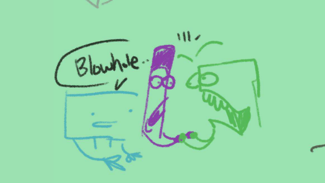

PREFACE
I had just joined the FCR friend-group in 2020 and was immediately injected with bfdi culture. Never saw the series before, and i'm not sure whether i saw Epic's YAG or BFDI first.
This was my thinly veiled attempt at saying "can i work for one of you?". Working with Epic on YAG was my first idea, because she liked this rewrite a bunch when I presented it.
Unfortunately I didn't have the gut to say it outright, so Fristo gladly swept me away into Media Battle, and i'm very happy with how it went!
Original YAG 6 by FuzzyEpic3 here
YAG 6 REWRITE
by TEXT WALL, DECEMBER 17, 2020
A CUBE: Good morning everyone! You're probably wondering why you are all in glass cubes!
MARKER: YEAH.
A CUBE: Well, before admitting that buying giant glass cubes was a bad financial decision for decoration, I decided to have this be an "escape arts" challenge!
It'll shake things up a bit.
A CUBE: Teams A,2,and Gamma! Your boxes will be dropped into the water here, the last to come back up is eliminated!
D100: WHAT?!
A CUBE: Don't worry about the fish, by the way. The local aquarium has dispersed their regular amounts of kibble to distract them. It's a lot cheaper that way!
(A CUBE drops the glass boxes into the water)
D100: IS HE CRAZY?! WE'RE GONNA DIE!!
BOUNCY BALL: Relax, D100! Look, here's the kibble, they're perfectly satiated.
(ORCA immediately eats team A's box)
WARIO LAND 4: HAHAHA!! WE GOT OUT OF OUR BOX FIRST!
ASTHMA INHALER: Sure, if you discount the other horrible situation we are in.

ASTHMA INHALER: I suggest if we don't go out the.. natural side, we leave through the blowhole.
WARIO LAND 4 and MARKER: (gasps in unison) That's right.. BLOWHOLE! IT'S SO SIMPLE!!
ASTHMA INHALER: What.

ASTHMA INHALER: HOW IS THIS THE "SIMPLE" WAY OUT??
MARKER: I think it's the awesome way out.
WARIO LAND 4: YEAH, just blast that air and we can steer this baby in no time! All aboard the GARLIC EXPRESS!
ASTHMA INHALER: Alright, fine, one, two, three.....
(ASTHMA INHALER blows and the orca accelerates towards the surface.)
TEAM A: WAAAAHOOOOOOO!!!!!!!!!!!!!

(TEAM A flies past the other glass boxes.)
1970'S GLOBEY: Oh, hey. I know this place! I'm sure I can figure out something to help us out here. The old fashioned way!
MONITOR: Sure....
MONITOR: ...but let me handle the efficient analytics. These creatures are interesting, they seem to be...
1970'S GLOBEY: ...!
MONITOR:.....!
1970'S GLOBEY: THAT'S AN ALBINO SPINNINNY EEL! It's favorite meal is spinning kibble! HAHA! Faster than the computer by 0.3 milliseconds! How great!
MONITOR: 0.2 milliseconds.... my bad for doubting you. What's that sound?
(KSSU is kicking the glass frame)
1970'S GLOBEY: Hey, HEY! Unless you HAVE A PLAN, we shouldn't break out now! We could be bit!
MONITOR: Yeah, and when we do break out, i'll be the one doing it! Being Precise is MY job!
(MONITOR trips over 1970'S GLOBEY)
(MONITOR falls and breaks the glass with his abnormally large head. ALBINO SPINNINNY EELS see the panicking, spinning 1970's GLOBEY and MONITOR
KSSU realizes their plan has to be much quicker than expected.)
(For KSSU's plan was not to break out to swim, but to reach the KIBBLE. KSSU gains the KIBBLE ability. ALBINO SPINNINNY EELS get closer.)
(KSSU fashions the EELS into a rope, while 1970'S GLOBEY and MONITOR realize what's going on. Though MONITOR realizes 0.2 milliseconds faster.)
MONITOR: KSSU, you can rope us towards the pier's pole if you shoot it at a precise 45 degree angle!
(KSSU's ALBINO SPINNINNY EEL ROPE bursts out of the water)
A CUBE: Glass cubes were probably not a good decoration, but cardboard wou-
(KSSU's ALBINO SPINNINNY EEL ROPE latches onto A CUBE's eye)
A CUBE: MY EYE!!!

(A CUBE throws his head down angrily, and therefore with his impressive strength drops TEAM GAMMA in front of him)
A CUBE: YOU......
A CUBE: Are the FIRST ones here! Congratulations TEAM GAMMA! You are SAFE!
WARIO LAND 4: THE GARLIC EXPRESS is speeding away faster than hamsters from my lawnmower!
ASTHMA INHALER: I know! I'm enjoying this quite a bit!
MARKER: We have got to be near the surface now! Let's check, fellas!
ASTHMA INHALER: Good thing, too. I'm pretty much out of reliever.
(THE ORCA is miles into the atmosphere)
ASTHMA INHALER: WE'RE GONNA DIE!!!!!
WARIO LAND 4: We can't land??
ASTHMA INHALER: I don't have enough RELIEVER in this canister to do that!!
MARKER: QUICK!! FIND SOMETHING WE CAN USE IN HERE!!
WARIO LAND 4: Ahh.. my stash of incriminating evidence! How'd you end up here?
MARKER: I Have a GOOD IDEA.
MARKER: I saw this in a cartoon, so it has to work
(WARIO LAND 4 places a rocket into ASTHMA INHALER's canister)
WARIO LAND 4: Good luck, old friend.
ASTHMA INHALER: Aw, thank you.
WARIO LAND: I'm talkin' to the rocket, airbag. This is the seperation of a WARIO LAND and his ROCKET.
ASTHMA INHALER: Whatever. I'll try it.
((ASTHMA INHALER blows through the rocket and blasts the by-now very confused orca through the sky.)
WARIO LAND 4 and MARKER: WAAAAHOOOOOOOOOOOOOOOO!!!!
(Hordes of flies stuff their mouths as they speed by.)
WARIO LAND 4 and MARKER: WAAHHGGHHOORGHHHOAGHAAAOOOOO!!!
MARBLE: So we're stuck going up this cliff, but TEAM A is probably living their fantasies with that ORCA.
BOUNCY BALL: Sorry, it's this stupid Ball i'm chained to! I would go faster if i could!
MARBLE: Actually, you can go faster. Just throw it harder! We're crawling at this speed
BOUNCY BALL: Alright, i'll try.
D100: WAIT! That's dangerous!
MARBLE: Dangerous how? We are probably the only team light enough to actually FLOAT up.
D100: Yeah, but what about those fish??
MARBLE: Then I'll beat them up. It's fine. We'll go FASTER!
(MARBLE and D100 fight over the chained ball)
D100: SLOWER!
MARBLE: FASTER!
D100: SLOOWER!!
MARBLE: FAASTER!!
D100: SLOOOWER!!
MARBLE: SLOOOOOWER!!!
D100: FAAAAAASTER!
(D100 breaks the glass with the chained ball, accidentally)
MARBLE: Alright, i'll see you guys on the surface!
BOUNCY BALL: We need EVERYONE on the surface for us to be safe, MARBLE.
MARBLE: Damn. Nothing to go to but rocks and pipes!
D100: Don't discount the pipes! If i remember, These happen to have a network to the surface!
BOUNCY BALL: What kind of things did you experience in order to remember THAT?
MARBLE: Don't give her too much credit, BOUNCY BALL. She probably reads safety manuals for fun.
D100: Yeah, so what? I don't like taking chances. We can probably follow it up! Let's get climbing again!
BOUNCY BALL: Or, we can just go IN IT. The scariest fish in there is probably Luigi Glove.
MARBLE: BOUNCY BALL has a good idea for once!
D100: We are not doing THAT! Sure, the pressure can lift the chained ball, but that sounds dangerous!
BOUNCY BALL: Frankly, I'm tired of being a burden. I think I can take it, D100. Plus, I can sense marble was going to go in, anyway.
MARBLE: I can sense that too. Odd how that works.
D100: Well, i guess if it's a SAFETY pipe it-
(TEAM 2 is sucked violently into the pipe's current.)
TEAM 2: EAAAAAAAAAAAAAAAAAAAGGH!!!
(As TEAM 2 is forced around the pipe system, Bouncy Ball collides with 3D PRINTED NAILY, accidentally piercing LUIGI GLOVE and CHEESE STICK.)
BOUNCY BALL: Sorry!--
(Back on the surface, A CUBE is enjoying 1970'S GLOBEY's roasted ALBINO SPINNINNY EEL dish. TEAM A's ORCA finally lands and spits TEAM A out of it's blowhole.)
A CUBE: Is that TEAM A I hear? I would give you safety....
(TEAM A's ORCA also blows out the glass box's shards, forming perfectly around TEAM A.)
A CUBE: .....HOWEVER, it seems you haven't escaped your glass box after all!
WARIO LAND 4: NOOO!!!!! C'MON!! It can't be that strong now, break out with all your MIGHT! What's that noise??
(TEAM 2 finally bursts out of the pipe system, flinging high into the air)

(TEAM 2 thankfully lands safely on everyone's food, which goes everywhere.)
A CUBE: TEAM 2, you're safe.
THE END
AFTERTHOUGHTS
So yeah, this is what I thought object shows should be after seeing one. There's many holes here, but I can at least say it's entertaining. My idea was to seperate the teams into ideas.
TEAM GAMMA would be the quick and funny one, TEAM 2 would be the character interacting-middle of the road one, and TEAM A were the fun wacky ones. Every character is having fun in a way or another.
This also led to my idea of choosing the funnest team to be the one up for elimination, for a harder vote. This was the beginning of a lot of tropes for myself, which includes the random animal worldbuilding.
I find natural worldbuilding like this interesting (as a fan of Yoyle Berries) and i wish they did that more! Although media battle was done a bit after this, it's much more professional. Thanks for watching!